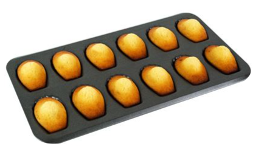

class: center, middle # Programmation orientée objet : # intro <img height="200px" src="img/php_logo.png"> --- ## Programmation O.O : concept ### Programmation classique Un programme est constitué : * d'affectations ```c int a = 3; ``` * de structures ```c if(a >= 0){ printf("Positif !"); } else { printf("Négatif !"); } ``` * d'appels de fonctions ```c int somme = calculerSomme(56,78); ``` **→ un programme peut être vu comme un ensemble d'appels de fonctions.** --- ## Programmation O.O : concept ### Programmation O.O En programmation O.O, **on voit le monde en terme d'objets**. *un élève, un ordinateur, un prof, un directeur, etc.* Souvent, un programme comporte **plusieurs objets de même types**. *plusieurs élèves, plusieurs profs, etc.* -- Comme pour la patisserie lorsqu'on souhaite cuire plusieurs gateaux (ici des madeleines) de la même forme...  ... **on utilise un moule !** --- ## Programmation O.O : concept ### Programmation O.O Mais toutes les madeleines, bien qu'elles proviennent du même moule, ne sont pas pareilles... <div style="display: flex; margin-bottom: 20px; flex-direction: row;"> <div style="width: 400px;"> Certaines sont au chocolat... <br> <img height="150px" src="img/madeleines_choco.jpg"> </div> <div style="width: 400px;"> D'autres sont trop cuites... <br> <img height="150px" src="img/madeleine_cuite.jpg"> </div> </div> <div style="margin-left: auto; margin-right: auto; width: 400px; text-align: center;"> Voire carrément ratées... <br> <img height="150px" src="img/madeleine_defaut.jpg"> </div> --- ## Programmation O.O : concept ### Programmation O.O En Java, un "moule" est appelé **classe**. *classe `Eleve`, classe `Prof`, etc.* → <span style="color: red;">une classe est donc un moule (un modèle) pour créer des objets de même type.</span> Une classe contient deux types d'information : * des caractéritiques de l'objet (**propriétés**) de la classe ```php $madeleine->goût = "choco"; $madeleine->tropCuite = true; ``` * des fonctions (**méthodes**) que l'on peut appeler sur tout objet de la classe ```php $madeleine->cuire(180); $madeleine->démouler(); ``` Exercice : quelles propriétés / méthodes pour la classe `Eleve` ? --- ## Différences entre C et PHP ### En C... Un programme est un ensemble de fonctions. ```c variable = valeur; maFonction(arguments); ``` ### En PHP... Un programme est un ensemble d'objets. ```php $objet->propriete = valeur; $objet->maFonction(arguments); ```